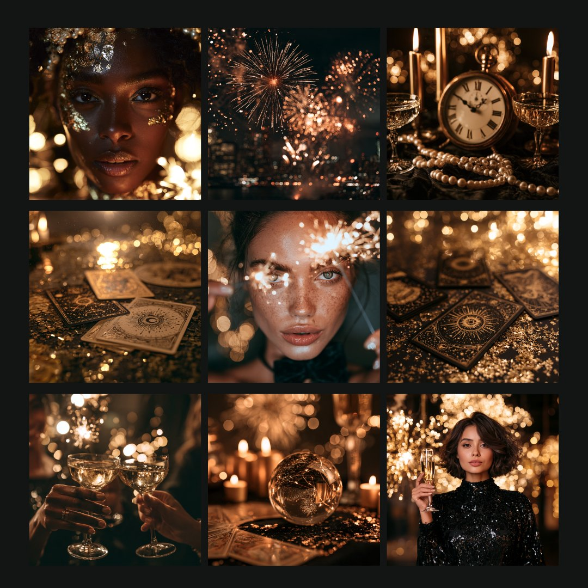

Create a full set of New Year's Eve graphics in your brand colors using the New Year's Eve stock photos and four ChatGPT prompts. Your colors, your offers, your words.

Download all 9 photosA zip of 9 full-size PNGs. Commercial use: put them on your posts, sales pages, freebies and anything you sell.
Your style grid
The grid above is your style reference. Open it full size, then save it or copy it straight into ChatGPT. It goes in with Prompts 1, 2 and 4, so every new image comes back in this palette and style.
Fill in the gold brackets with your own details before you send.
Prompt 1
Put the whole set in your brand colors
Do this one in ChatGPT Work. Drop in the style grid and paste:
Use the attached image as the visual reference for the subjects, composition, lighting, mood, and photographic style.
Recreate the nine scenes as nine separate, full-resolution square images. Generate and deliver each image as its own downloadable file, one image at a time. Do not create a collage, contact sheet, mood board, grid, or combined image.
Apply my brand colors throughout the complete set: [your brand colors]. Incorporate the colors naturally into the clothing, sequins, glitter, tarot cards, candles, glassware, jewelry, and decorative details. Keep the sparkle, the candlelight and the midnight glow so the set still reads as New Year's Eve. Keep skin tones natural and retain the warm, dramatic, low-light atmosphere and lush mystical editorial feeling of the reference.
Create these nine individual images:
1. A woman's face dusted with gold glitter, framed by golden bokeh
2. Fireworks bursting over a city skyline at midnight
3. An antique clock near midnight between candles, champagne coupes and pearls
4. Tarot cards scattered on a gold glitter table by candlelight
5. A freckled woman with a sparkler glowing beside her face
6. Gold-edged tarot cards on black and gold glitter, close up
7. Two hands toasting with champagne coupes in front of sparklers
8. A crystal ball among candles and tarot cards on a glittering table
9. A woman in a black sequin dress raising a champagne flute among sparkling lights
Keep the set visually cohesive. Match the reference image's subjects, close framing, photographic realism, rich texture, light direction, and intimate atmosphere. Each image must feel complete on its own and use the maximum available resolution.
You get all nine photos back as separate files, still New Year's Eve, with your colors worked into the sequins, glitter, cards and candlelight.
Prompt 2
Make a new image in this style
Drop the style grid into ChatGPT and paste:
Use the attached image as the color palette and style. Create an image of [what you need] for my [Instagram post / sales page / freebie cover], [1:1 for a post / 3:2 for a sales page / 9:16 for a story].
Fill the first bracket with your own work: a tarot spread for the year ahead, a candlelit intention altar, a champagne toast for a client win, a journal open to a fresh page. The size bracket sets the shape, so your image fits where it is going.
Prompt 3
Build a matching set
Do this one in ChatGPT Work. Drop in any photo from the pack, or an image ChatGPT made you, and paste:
Use this image as the style. Create a set of ten images that match it for my [your kind of business]. Then give me three matching backgrounds I can put text on.
When an image misses, ask again in different words. To take something out, tell ChatGPT what to remove and circle the spot so it knows exactly where.
Prompt 4
Plan and post a seven-part series
Four steps, all in one ChatGPT Work chat, so each step builds on the last.
Step 1 · Plan the series
Start a new chat with no image attached and paste:
Help me plan a seven-part series for my [Instagram / Facebook / wherever you post] for my [your kind of business] on [your topic]. It should teach my followers [what they will learn].
For each of the seven posts, give me a headline of 3 to 6 words that names the idea of that post, and one practical tip, one or two short sentences, that a follower can use today.
Keep it to text for now. We'll make the images next.
Pick a topic your people already ask you about: a week of year-ahead tarot pulls, seven intentions for the new year, a week of reflection prompts for your clients, seven ways to close out the year. Then read all seven. In the same chat, change any headline or tip that doesn't sound like you, until you'd post every one.
Step 2 · Make the images
In the same chat, drop in the style grid and paste:
Use the attached image as the color palette and style. Create the seven images for this series, one at a time, each as its own square file. Put each post's headline and tip on its image, spelled exactly as we wrote them, with clear space around the edges and large enough to read on a phone. Keep the palette, light and look the same across all seven.
ChatGPT pulls different scenes out of the grid for each post, so the seven look like one set without repeating.
Step 3 · Write the captions
Same chat:
Now write a caption for each of the seven posts, for [Instagram / Facebook]. Open each one with a line that makes someone stop scrolling, teach the tip in a few short sentences, and end with [what you want them to do: comment, save, visit your link]. Keep each caption under 150 words.
Paste in a caption you've written before and ask ChatGPT to match how you write.
Step 4 · Make the story graphics
Same chat:
Please turn all seven of the images into Instagram story size.
Post the feed image and its story on the same day. Seven days of posts and stories from one chat.
Inside Soul-Forged Founders
Bring your kit to Build Studio
Build Studio is live every Friday at 1:00pm PT. Bring the set you made from this kit, ask your questions while the build happens, and post what you make in the community so we can all see it.